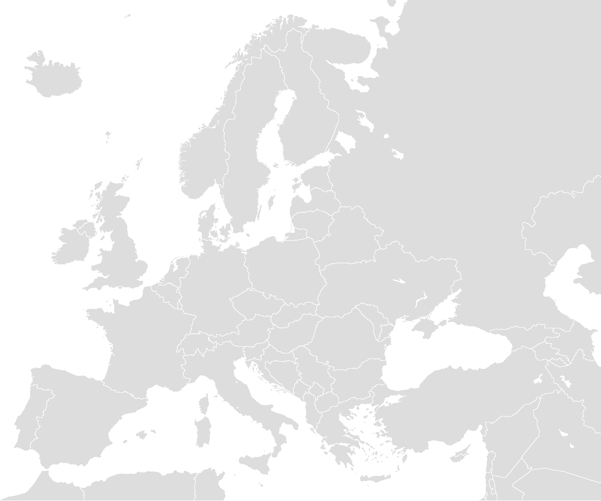

🌍 MEIN RETRO-REISEBLOG 🌍
✨ Reisen wie in den 2000ern ✨
🗺️ Meine Reise-Karte

🎨 Legende:
Je größer die farbige Fläche um eine Stadt, desto mehr habe ich darüber geschrieben!
📝 Meine Reiseberichte
🌍 Land:
Alle Länder
📅 Jahr:
Alle Jahre
🔄 Sortierung:
Neueste zuerst
Älteste zuerst